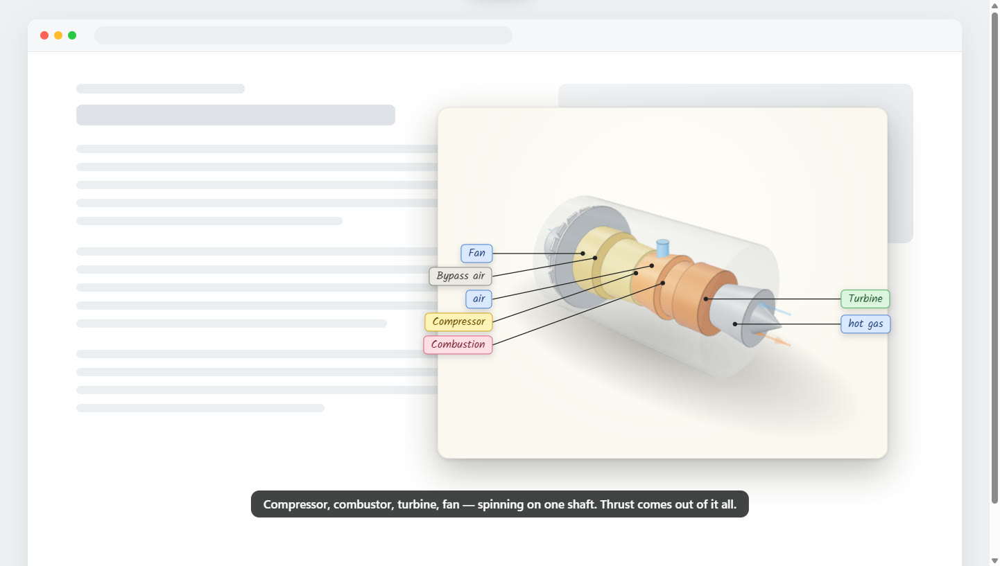
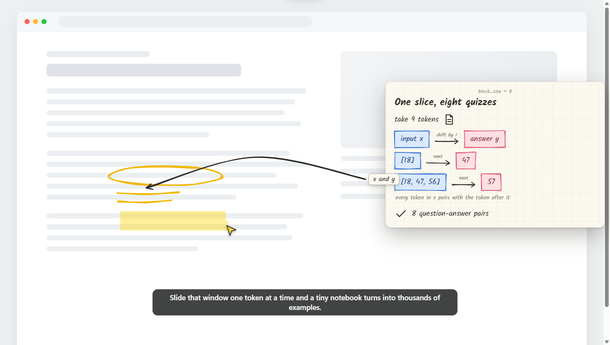
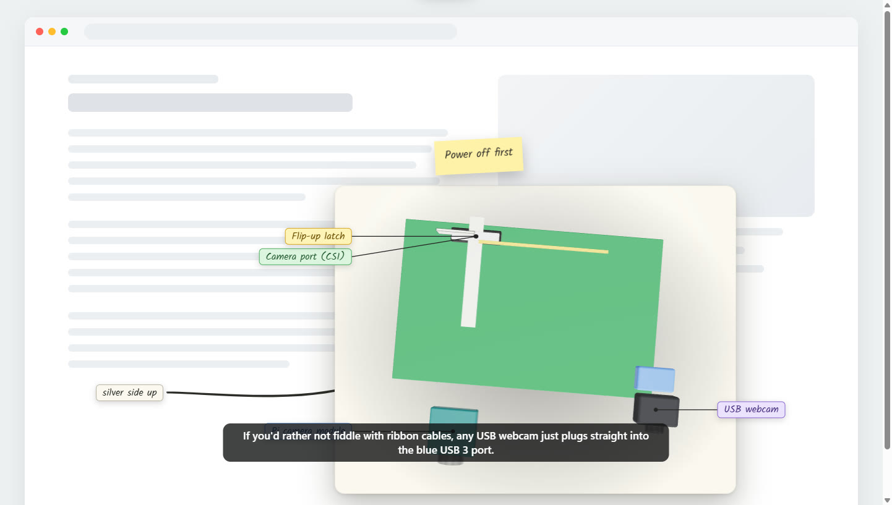

Draws on the real thing
Hand-drawn loops, labels and highlights land on the actual content, so you see exactly which part it means.
Penny is an AI tutor that lives on your screen. Point at anything, ask a question, and it answers in a few spoken sentences while drawing diagrams, labels and 3D models right on top of what you're looking at.
Free and open sourceWindows 10/11Use your own Claude, ChatGPT or Gemini account

No chat window
Penny talks you through the answer and puts the pictures right where you're already looking: on the page, the diagram or the code in front of you.
Hand-drawn loops, labels and highlights land on the actual content, so you see exactly which part it means.
Paper cards walk through the idea one step at a time, and sticky notes pin the bit you shouldn't miss.
A glass jet-engine cut-away, skaters pushing off with force arrows, a Raspberry Pi with its camera cable going in. Drag them around.
Ask out loud or type. Penny answers in a few spoken sentences, with captions, and starts talking in about 3.4 seconds.*
While Penny listens, a yellow ink trail follows your mouse. Circle something, or rest the pointer on it, and say “what is this?”
Penny ships with no account of its own. Bring your Claude, ChatGPT, Gemini or OpenAI account and pick the model you like.
* Time to the first spoken words, measured with DeepSeek through Command Code. Other models and accounts vary.
How it works
Penny sits quietly in the system tray until you ask it something.
Hold the keys while you speak and let go to send. If another app has that shortcut, Penny picks another and shows it in its tray menu. Prefer typing? You can type the question instead.
Circle the thing you mean, or rest the pointer on it. Penny sees your screen and the spot you picked.
It answers in a few spoken sentences while loops, labels, cards and 3D models appear on top of your screen.
Real answers, real screens
Each of these is Penny answering a spoken question, captured straight from the screen.


Bring your own account
Penny has no account of its own. Connect one of these in the tray menu and press Use.
Paste an API key, or use Sign in with Claude for a Claude API (Console) account.
Claude Pro and Max chat subscriptions can't be used: Anthropic doesn't allow third-party apps to use them.
Use Sign in with ChatGPT, which goes through OpenAI's Codex and uses your ChatGPT plan.
Paste a Gemini API key, or sign in with your Google account through Antigravity.
Paste an OpenAI API key, or use the Command Code or Antigravity command-line tools with their own login.
API keys are encrypted on your computer and never leave it, except to go to their own provider. You can test or remove a key at any time.
Penny for Chrome
Penny for Chrome works on any web page. Use a Claude, OpenAI or Gemini API key, or sign in with your ChatGPT, Claude or Google account through the Penny app. Press Alt+Shift+P, type or say your question, and the answer is drawn on the page.
chrome://extensions in Chrome.Free and open source
Pick the one that suits you. Both use your own AI account.
The full Penny: voice, pointing, drawing and 3D anywhere on your screen.
Download for WindowsWorks on any web page with your own Claude, OpenAI or Gemini key.
Download the zipRead it, build it yourself, report a bug or send an improvement.
View on GitHubpy -m pip install -U openai-whisper edge-ttsThe installer is unsigned, so Windows SmartScreen may show a warning. Click More info, then Run anyway.
Prefer to check first? The full source is on GitHub.
FAQ
Yes. Penny is free and open source. The AI comes from your own account, so any usage is billed by that provider, the same as using it anywhere else.
Claude (with an API key or Sign in with Claude for a Claude API account), ChatGPT (Sign in with ChatGPT, through OpenAI's Codex), Gemini (an API key, or your Google account through Antigravity), OpenAI with an API key, and the models offered by the Command Code and Antigravity command-line tools. The model has to be able to read a screenshot.
When you ask, the screenshot and your question go to the model you chose. Spoken answers go to Microsoft's voice service unless you pick the Windows voice. Speech recognition runs locally on your PC.
Anthropic doesn't allow third-party apps to use Claude Pro or Max chat subscriptions. Use a Claude API key, or Sign in with Claude for a Claude API (Console) account, instead.
Yes. Point at a pictured object, such as a product photo, a toy or a piece of furniture, and ask to see it in 3D. Penny sculpts a real 3D copy with Idol on Hugging Face’s GPUs, including the sides the picture never showed, and you can turn it around. It works a time or two a day without an account; a free Hugging Face token gives you your own daily quota.
Not yet. The desktop app is for Windows 10 and 11. Penny for Chrome doesn't need the desktop app.
Only for voice input. Install it with py -m pip install -U openai-whisper edge-tts. Without it, you can still type your questions and hear answers in the Windows voice.
Who made Penny
Creator of Penny
“The best explanation is the one drawn right where you’re already looking.”